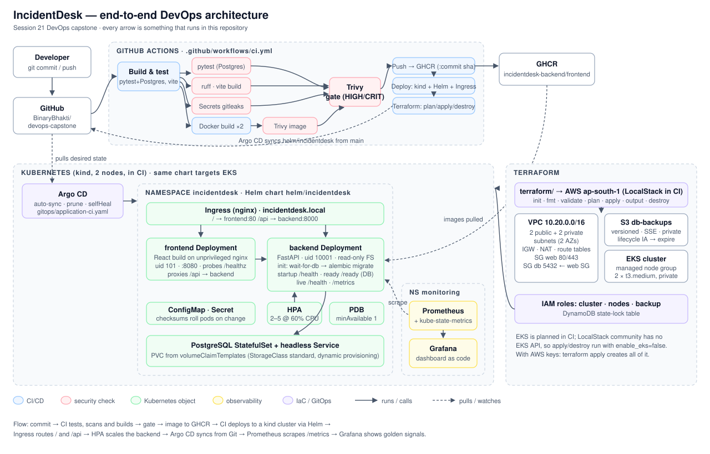

/health, /ready and /metricsApplication
Python 3.12FastAPISQLAlchemy 2AlembicPostgreSQL 16pytestruffReact 19VitenginxDelivery
DockerComposeGitHub ActionsGHCRTrivygitleaksPlatform
TerraformAWS VPCEKSLocalStackKubernetes (kind)HelmNGINX IngressHPA + metrics-serverArgo CDObservability
Prometheuskube-state-metricsGrafanaalert rulesdashboard as code
push to main
├─ Test ............ ruff · pytest -v (real Postgres service) · npm ci && vite build
├─ Secret scan ..... gitleaks over the full history
├─ Build/scan/push . docker build ×2 → Trivy (HIGH/CRITICAL, exit 1) → GHCR :<commit sha>
├─ Terraform ....... fmt · init · validate · plan (VPC+EKS) · apply · destroy (LocalStack)
└─ Deploy .......... kind → Ingress → Prometheus/Grafana → helm upgrade --install
→ smoke test via Ingress → load test → HPA → PromQL checks
→ screenshots → Argo CD sync → troubleshooting lab
| Layer | Tool | Where |
|---|---|---|
| Secret scanning | gitleaks (full Git history) | CI job Secret scan |
| Container scanning | Trivy: OS packages + Python/npm deps | both images, before push |
| SAST / dependency audit | Semgrep, Bandit, pip-audit configs | security/ |
| Runtime hardening | non-root uid, read-only root FS, no default DB password | Dockerfiles, Helm chart |
A scanner is one control, not a guarantee. --ignore-unfixed gates on what we can fix by upgrading. Accepted risks need a reason and a review date in .trivyignore.
10.20.0.0/16 in ap-south-1terraform init terraform plan # VPC + EKS terraform apply aws eks update-kubeconfig \ --name incidentdesk-dev-eks terraform destroy
No AWS account: CI runs it on LocalStack. The plan includes EKS; apply/destroy create and remove the network, IAM and storage (EKS is LocalStack Pro-only).
incidentdesk/health · readiness /ready/ → frontend, /api → backendkubectl apply -f k8s/namespace.yaml helm upgrade --install incidentdesk \ ./helm/incidentdesk -n incidentdesk kubectl get pods,svc,ingress,hpa \ -n incidentdesk helm list -n incidentdesk
GitOps: an Argo CD Application syncs the same chart from Git with auto-sync, prune and self-heal.
/metrics: request count and latency histogram per route, plus incidents_created_total| Break | Symptom | Investigation | Fix |
|---|---|---|---|
| Image tag that doesn't exist | ImagePullBackOff | describe pod, events | set image to the CI SHA |
| Service selector typo | no endpoints → 502 | get endpoints, --show-labels | match labels |
| Wrong readiness path | 0/1 Ready | describe, probe events | /ready |
| HPA without requests | <unknown> targets | describe hpa | set requests |
| Hand edit in cluster | drift | Argo CD diff | self-heal |
/ready checks the database, so traffic only reaches pods that can servelatest: rollback means picking a commit